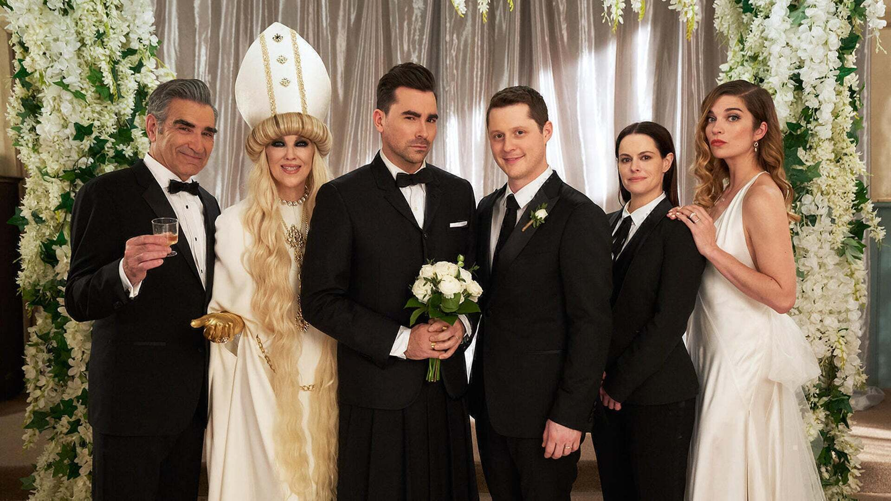

7 Shows Like Schitt's Creek You Should Watch If You Miss Schitt's Creek
Schitt's Creek started out as a cult favorite Canadian sitcom and grew into an Emmy-winning powerhouse.
The feel-good comedy gave fans the most satisfying, heartfelt conclusion possible, but even when beloved
shows wrap up well, they can be hard to let go of. And as fun as it is to rewatch the misadventures of the
Rose family, sometimes you just want to enjoy a new show. If you're looking to expand your TV horizons but
stay true to the feeling of Schitt's Creek, look no further.
While no other show may ever do exactly what Schitt's Creek did, there are plenty of other series
out there that will remind you of the things that made you fall in love with the Roses, their kooky town,
and its even kookier inhabitants. Whether you're looking for another sitcom about a chaotic family, or one
with three-dimensional LGBTQ+ characters, or just something that serves up smart, fast-paced comedy, we very
well might just have the show for you.